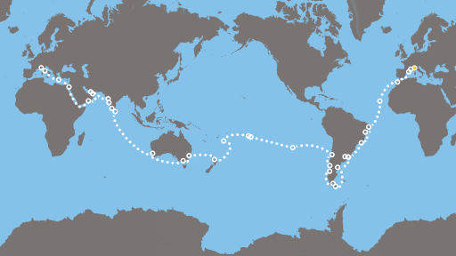

Egy üdülőhajó fedélzetén bő három hónap alatt körbe lehet járni a Földet, és 5 kontinensen akár 70 kikötőt is fel lehet keresni. És az sem feltétlenül szükséges, hogy az út túl sokba kerüljön, bár egy lakosztályban két személyre akár fél millió eurónál nagyobb összeget is ki lehet adni.
Az Aida társaság Hamburgból az Aida Carat indítja 116 napos világ körüli útra,23 ország 41 kikötőjét érinti, többek között a Tűzföldön Ushuaiat is, megkerüli a Horn fokot, majd Francia Polinézia, Ausztrália keleti partja, Bali, Maldív szigetek érintésével a Szuezi csatornán át jut vissza Európába, a végén pedig Hamburgba. Az Aida Cara a legrégebbi (1996) és legkisebb Aida hajó .
A német Phoenix Reisen társaság Albatros nevű hajója most december 22-én indul 112 napos útjára a Karib-tenger irányába, aztán a Panama csatornán áthaladva érinti Costa Ricát, Ausztráliát, Indonéziát is. Az ilyen hajókon ritka négyágyas kabinban egy körutat 100 euró/ nap alatt is lehet abszolválni.